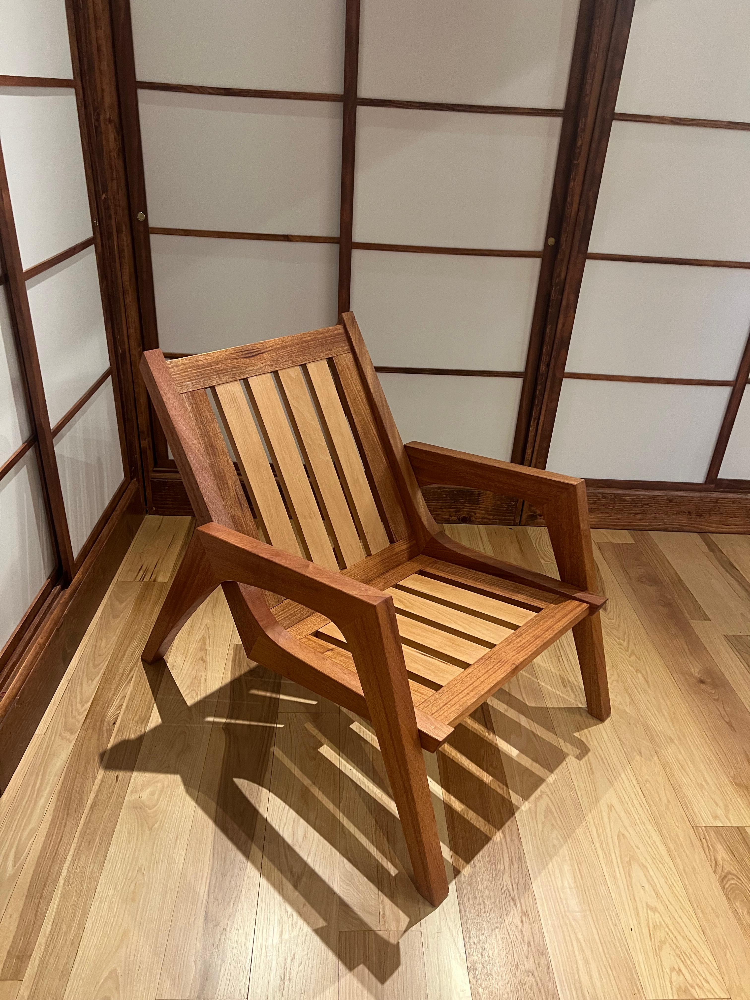

2023
Chair
A mid-century modern lounge chair built from mahogany and beech wood.
Shaped and joined using a miter saw, table saw, band saw, circular sander, and Domino joiner.

A mid-century modern lounge chair built from mahogany and beech wood.
Shaped and joined using a miter saw, table saw, band saw, circular sander, and Domino joiner.
